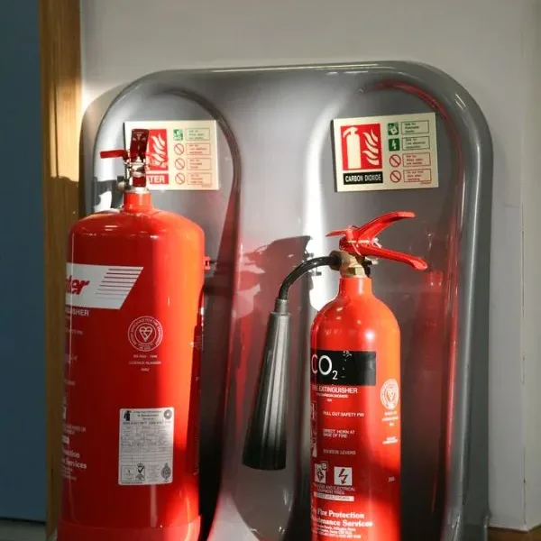
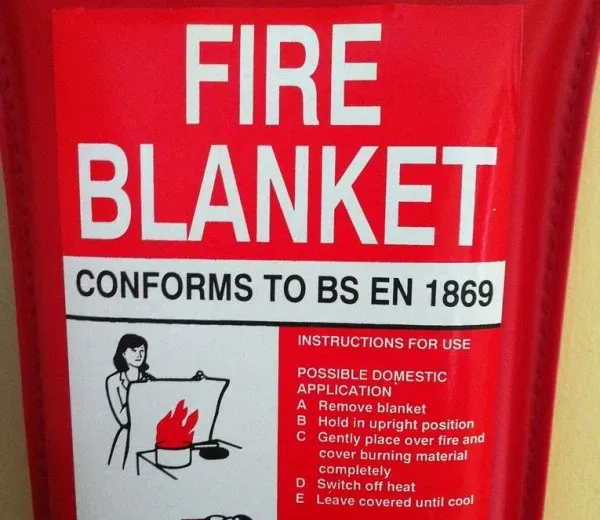
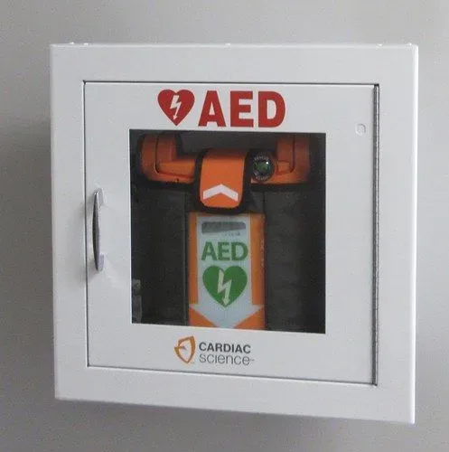
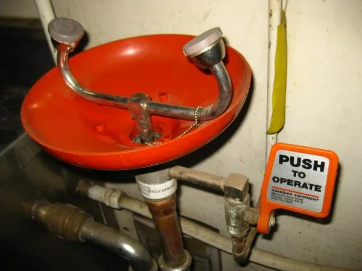

Everything on the 1.28 safety quiz: what to wear, how to work, what can hurt you on a robot, and what to do in a fire or an injury.
Part 1 is PPE, conduct, and hazards. Part 2 is emergencies, situations, and first aid. Each is closed book, in person, and needs 100%. A walk-around with a mentor, where you show where the safety gear is, finishes 1.28.
Quick checks save your first answer and explain it, and you can always move on. Checkpoints cover the can't-fail topics, and you can't go on until you get each one right. The last slide shows your score to download and turn in on the Teams assignment.
All of it. Safety needs 100%, so every slide here is on the quiz. The checkpoints mark the moves people most often get wrong when it's real.
What you wear, how you work, and what can hurt you in the shop and on the robot.
Running a tool, watching someone else run one, or just walking through while anyone is working. Chips and broken bits hit bystanders too.
Build members wear rated goggles or over-the-glasses safety glasses on top, or prescription safety glasses marked Z87. Everyday lenses can pop out of their frames, and clip-on side shields leave gaps.
Step back from the work, wipe them or swap for another pair, then go back. Never work with them off or pushed down your nose.
The grinder needs a face shield over your safety glasses, or over your prescription glasses. Glasses alone aren't enough, even standing off to the side, and a shield is never eye protection by itself.
A grinding wheel can throw sparks, chips, and pieces of a broken disc at your whole face, and glasses only cover your eyes. A short job is just as fast to go wrong.
A grinder can send sparks and broken wheel pieces at your whole face. Think about what has to cover your face, on top of what covers your eyes.
If you have to raise your voice to talk to someone an arm's length away, it's loud enough for hearing protection, even if you're only filing nearby.
Roll them tight and thin, push them deep into the ear canal, and hold them while they expand to seal. Loose plugs barely block anything.
Sanding wood, MDF, or 3D-printed parts. Sanding or cutting carbon fiber or fiberglass. Opening the laser lid while smoke is still clearing. Not for driving screws.
If your glasses fog the moment the mask goes on, air is leaking over your nose, and dust gets in the same way. Pinch the nose clip and refit. Facial hair under the seal leaks too.
Long hair tied back, with bangs pinned or clipped out of your face. A long ponytail gets tucked in or put up in a bun, because tied back isn't the same as out of the way.
Closed-toe shoes that protect your feet. Sandals, slides, and foam clogs with holes don't count, even with a covered toe.
Rings, bracelets, necklaces, and lanyards off at power tools. Hoodie drawstrings tucked inside or pulled out.
No gloves of any kind at a drill or any spinning tool, not even thin nitrile ones. A spinning bit can wind up a glove with your hand inside. Clamp the work instead.
A spinning bit can grab even a thin glove and wind it up, with your fingers inside. Clamp the part in a vise so your hands don't have to be near the bit, and handle sharp parts once the spindle has stopped.
Any glove near the bit gives it something to grab and wind up, and the hand holding the part is the one closest to the bit. The team rule covers every kind of glove. What keeps your hands safe without one?
Never squeeze past, tap, or call to someone running a tool. Wait until they've finished and the tool has stopped, then get their attention from where they can see you. Startled hands slip.
Say "using the" and the tool's name before you start it, then look around and make sure everyone nearby knows.
Nobody works alone, and nobody works in a pair. Three is the minimum, so one person can always stay and one can go for help.
Tools back where they go, walkways clear, chips cleaned up at your spot, and your part labeled and stored.
A small bracket goes in a vise or gets clamped so it can't move or spin. If the bit grabs, a part held by hand, a teammate, or pliers spins with it.
A cut cord, a cracked handle, a wobbly blade: unplug it or pull the battery, tag it with blue tape so it can't be used, and tell a mentor.
Don't tape up a cut cord and keep going, and don't quietly put the tool back. The next person won't know.
A power saw, grinder, or rotary tool only runs with a mentor in the room. Not a team lead, not a Certified teammate.
You've been taught, and you use the tool with a mentor watching you.
A mentor is in the room, but not walking you through it step by step. Being Certified loosens how closely you're watched. A mentor still has to be in the room.
Stop and wait until a mentor is back in the room, even with one cut left.
A mentor in the room is the rule for Certified students. While you're Supervised, the mentor is close by and watching your cut. A Certified teammate doesn't replace a mentor.
Supervised is the step before Certified. Think about who has to be watching, and how closely, while you're still at that step.
It doesn't matter that you started with them there or that you're Certified. Power off, wait, and pick up where you left off when they're back.
The rule is that a mentor is in the room whenever the saw runs. When the job started and how careful you are don't change that. What does that mean for the next cut?
You build up charge every time you move. Touch grounded metal, or wear a grounded wrist strap, right before you pick up a board like the roboRIO, and hold it by its edges.
Capacitors in power supplies and battery chargers can hold a dangerous charge after they're unplugged. Nobody on the team opens one.
Never use a tool or extension cord with damaged insulation. Never plug a power strip into another power strip.
Pull the battery or unplug the tool before you change a saw blade or router bit.
Every chemical has a Safety Data Sheet. Section 4 is first aid.
Tell a mentor, then clean it up the way its SDS says, with gloves if it calls for them. Don't just wipe it into the trash or hose it down.
Rinse with lots of water for at least 15 minutes, take off anything it soaked into, and tell a mentor.
The team keeps baking soda to neutralize battery acid on the bench, the floor, or a leaking battery. Never on skin: it fizzes and heats on damaged skin, and every second mixing paste is a second not rinsing.
Your wrist gets cool running water for at least 15 minutes, with anything soaked taken off. The bench spill gets baking soda and gets cleaned up the way the SDS says, after a mentor knows.
Baking soda reacts and heats up, which is fine on a bench and wrong on skin. Hosing down a spill just spreads it. Which one goes on your wrist?
A wrench, tool, or anything metal across both terminals is a short circuit: it can go red hot, throw sparks, and burn you. Carry tools separately from the battery, and never set one on top of it.
A puffed-up or warm lithium battery stops being used. Don't charge it. Set it on a non-flammable surface away from anything that burns, and tell a mentor.
A battery that looks puffed up comes off the charger and gets reported.

| Light | What it means | Safe to reach in? |
|---|---|---|
| Solid | On and disabled | No. The main breaker is still on, and mechanisms can still drop. |
| Blinking | On and enabled: it can move at any moment | No |
| Off | Could be off, could be an unpowered roboRIO, could be an unplugged or broken light | Don't bet on it. Check the main breaker yourself. |
The robot signal light is the orange light on the robot.
A dark light doesn't prove the robot is off. The roboRIO may refuse to enable without a working light, but don't bet your hands on it.
The light could be unplugged or broken, and the laptop could just be disconnected, while the battery still powers the robot. Look at the breaker yourself and open it before your hands go in.
A broken light and a dropped connection both look like "off." Which one thing on the robot actually tells you the power is cut?
The robot is on blocks with its wheels off the surface. Someone at the Driver Station is ready to disable. Everyone is outside the mechanisms' reach, and nobody holds an arm or roller steady.
Call out "enabling" and wait until every hand is clear.
Disable from the Driver Station, the laptop that drives the robot: Enter, or the space bar for an emergency stop. Call out "disable." Hands stay out of a moving robot; open the main breaker once it has stopped.
Clear every hand, make sure someone is ready at the Driver Station to disable, call out "enabling," and wait. A mechanism can move faster, or differently, than anyone expects.
Low speed in the code isn't a promise, and nobody reacts faster than a motor. What has to be true about everyone's hands before you enable?
Whoever is at the Driver Station disables it. Once it's still, open the main breaker before anyone goes near the arm.
Grabbing the arm or reaching for the battery puts hands next to a running mechanism. Who can stop it from a distance?
A raised arm or elevator. The robot sitting up on its cart. Air tanks at pressure. A charged battery, plugged in or not. A stretched spring or surgical tubing.
With the motors off, nothing may be holding an elevator up, so disabling can be the moment it drops. Lower it or pin it before reaching in.
Before you disconnect a tube or loosen a fitting, open the vent valve and check that every pressure gauge reads zero. Turning the robot off doesn't let the air out.
A raised climber can drop and a stretched spring can snap back, with no power at all. Lower it, pin it, or release it before hands go in.
Pulling the battery and disabling both stop the motors. Think about what else on the robot is holding energy right now.
Two or three people, lifting with your legs and your back straight. Never put your back into it, and never drag it off the cart.
By lift handles the team designed and installed. In 20-plus seasons no Rambots robot has had them, so they're a design requirement.
Never by the bumpers: they aren't built to carry the robot, and fingers end up underneath. Never by an arm or elevator.
Robot off, arms secured, and call the lift ("lift on three") before anyone picks it up.
Fire, injuries, calling 911, and putting it all together. The order is always: deal with the injury, call 911 if it's serious, and tell a mentor as soon as it's safe to.
The fire is bigger than a wastebasket or it's spreading. Smoke is filling the room. A battery, plastic, or chemicals are burning. You're not sure it can be put out, or you just feel you should go.
Getting the robot out first, or the fire alarm not having gone off yet.
A mentor uses the extinguisher, or an experienced student leader if no mentor is right there. Everyone else gets out and helps others get out.
Pull the fire alarm.
Pull the pin.
Aim at the base of the fire, not the flames.
Squeeze the handle.
Sweep side to side across the base.
With the exit behind you the whole time, so your way out stays clear.
People aim at the flames instead of the base. That's why a mentor or experienced student leader does it.
Make sure everyone in the room is coming with you, pull the fire alarm on the way out, and go to the meeting spot outside for a headcount.
Tell the mentor or the firefighters, and where that person was last seen. Nobody goes back in, not for a backpack, a laptop, or even a person.
This is the one case where you fight the fire no matter what: use the extinguisher or fire blanket to clear a path out. If there are enough people, someone calls 911 to say you're trapped, and someone works on another way out.
Firefighters can search a smoky building safely, and you can't. Telling them right away, with the last place you saw your teammate, is the fastest help.
Nobody goes back into a burning building, even for a person, and waiting costs time. Who can search safely, and what do they need from you?
With the fire between you and the only exit, waiting traps you in a room filling with smoke. The mentor fights it to open a path, one person calls 911 to say you're trapped, and another works on a second way out.
Smoke fills the room fast, and the fire is sitting on your only way out. Leaving isn't an option here, so what has to happen to the fire?
Pull the tabs. Hold the blanket up in front of you with the edges folded over your hands, lay it over the fire, unplug or shut off the source, and leave it on for at least 15 minutes. Lifting it early lets air back in.
Stop, drop, and roll. Wrap the blanket around them and help them down to the ground, keeping your hands behind the blanket. Running feeds the fire. Then cool the burn under running water and call 911.

| Gear | Where |
|---|---|
| Fire extinguishers | Two: one by the hallway door in room 104, and a Halotron (clean agent) next to the laser cutter |
| First aid kit | By the hallway door in room 104 |
| Eyewash station | Room 103 |
| AED | In the hallway toward the front entrance, between the reception lobby and the student union |
| Fire blanket | With the extinguisher by the hallway door in room 104 (there's no blanket at the laser) |
A mentor walks you through the shop. You point to each item, say PASS at the extinguisher, turn on the eyewash, and walk every way out of 104.

Flush it with eyewash, holding your eye open, and tell a mentor. Don't rub it, and don't let anyone dig it out. The first aid kit's bottle is only for a speck on the surface.
Go straight to the eyewash station in 103 and flush for at least 15 minutes. Wearing contacts? Start flushing first, take them out if it's easy, and keep going.
A sliver stuck in the eye: don't remove it or press on the eye. Cover both eyes loosely so they don't move, keep the person still, and call 911. Glue (CA) in the eye is a 911 call too.

A chemical can keep damaging the eye after the stinging fades. The station's steady flow for the full time is what washes it all out; the bottle is only for a speck on the surface.
Chemicals can keep working on the eye after the pain fades, and the bottle can't keep up a steady flow. How long does a chemical flush last?
Tap their shoulder and shout. If they don't respond, look at their breathing.
Not breathing at all and only gasping both count as not breathing normally. Call 911 or have someone call, send someone for the AED, start chest compressions, and get a mentor as soon as someone can go.
Call 911, roll them onto their side (the recovery position), and stay with them watching their breathing. If it stops or turns to gasping, start CPR.
The old ABC order (airway, breathing, circulation) was replaced. Compressions come first.
The recovery position is only for normal breathing. When breathing stops or turns to gasps, treat it as cardiac arrest: compressions now, the AED on its way, and tell 911 what changed.
Gasps can start after the heart stops. Think about which kind of breathing the recovery position is for, and what to do when that changes.
Hard and fast in the center of the chest: at least 2 inches deep, 100 to 120 a minute.
Tired rescuers get shallow without noticing. Switch about every 2 minutes, pausing as little as possible.
If you're trained and willing, 2 breaths after every 30 compressions. If not, hands-only compressions are still far better than nothing.
Turn it on and it talks you through each step. It checks the heart rhythm and only shocks if one is needed. Nobody touches the person while it analyzes or shocks.
Cut the power first: unplug it or switch it off. If you can't, push them free with something dry that doesn't conduct, like a wooden broom handle, without touching them. Then check if they respond and are breathing, call 911, and start CPR if they're not breathing normally.
Tell a mentor and get them checked out medically. A shock can upset the heart's rhythm even when someone feels fine at first.
With no way to cut the power, a dry wooden handle can push them off the circuit without putting you on it. Then check if they respond and are breathing, call 911, and start CPR if they're not breathing normally.
Grabbing them, even through clothes, can put you on the circuit, and waiting leaves them on it. What's within reach that won't carry current?
Press firmly on the wound with gauze or a clean cloth and tell a mentor right away. Washing comes after the bleeding is under control.
Add more gauze on top and keep pressing, harder. Pulling the soaked gauze off tears open what has started to clot.
If firm pressure isn't stopping it, a tourniquet goes 2 to 3 inches above the wound (toward the heart), not on a joint. Tighten until the bleeding stops, note the time, and call 911.
Firm pressure stops most bleeding. Soaked gauze stays and more goes on top. If it's spurting and pressure won't stop it, the tourniquet goes 2 to 3 inches above the wound, not on a joint, with the time noted, and 911 is called.
Washing waits until bleeding is under control, and waiting for a clot wastes blood. What's the very first thing your hands do?
Firm pressure on the bleeding and call 911. Follow the dispatcher's instructions.
Someone gets the fingertip ready: wrapped in clean, damp gauze, sealed in a dry plastic bag, and the bag set in ice water.
The part itself never touches ice and never sits loose in water. If it's just the two of you, the fingertip waits.
Cool running water for at least 10 minutes, and 20 is better. Take off rings or anything tight near the burn.
Cover it loosely with a clean dressing and tell a mentor.
No ice, no butter or ointment, and don't pop blisters.
Skin holds heat and keeps cooking after the contact ends. Cooling stops the burn from getting deeper, and it still helps even if you start late.
"We're at California Crosspoint Academy, 25500 Industrial Blvd, Hayward." Then which building and room you're in, and what happened.
Send someone out front to meet the ambulance and lead them in. Responders will struggle to find the right building and room.
Don't hang up until the dispatcher says to. Put it on speaker so your hands are free.
Always call 911 before the school office. Tell the office afterward when it's open; at night and on weekends, a mentor follows up.
The dispatcher needs an exact address, and the crew needs someone to lead them to the right building and room. Stay on the line on speaker until they say to hang up.
Responders need the school's name, the exact street address, and the room, plus someone to meet them. What would you say?
A cut that needed a bandage, a small burn, anything that hurt someone. Tell a mentor.
A part flying out of a vise, a tool that kicked back, even when nobody got hurt. Near misses show what to fix before someone does get hurt.
One stays with the injured person and calls 911 if it's needed; another goes to get a mentor. Injury first, then 911, then the mentor.
That's already against the rule. The uninjured person stays: firm pressure on the wound, 911 on speaker if it's serious, and tell a mentor as soon as it's safe to leave or someone else shows up.
Never leave the injured person alone to run for help, and don't both go.
Pressure on the wound never stops. The others split up: 911, the mentor, and someone out front to bring the ambulance in.
Whatever else happens, one person stays and keeps pressure on the wound. Then think about what each of the others can cover.
Anything loose near a spinning tool can wrap: hair that hangs, jewelry on your hands or wrists, gloves of any kind. Hair goes up and in, jewelry comes off, hands stay bare.
Build members at a power tool need rated eyewear; everyday glasses with clip-on shields leave gaps. Feet need closed-toe shoes even when you're only carrying stock.
Hair pinned back and up in a bun, and strings or a lanyard tucked inside your shirt, are out of the way.
One strip per outlet: never plug strips into each other. Cut insulation means the cord comes out of use; tape isn't a repair.
A puffed-up battery comes off the charger. Metal never rests on an FRC battery, where it could bridge the terminals.
If a bumped trigger could spin a blade or cutter, pull the battery or unplug the tool itself before your hands go near it. A switched-off strip can be switched back on.
Drill/driver bits, impact bits, and ratchet sockets can be swapped with the battery in, with the direction switch locked in the center.
Open the main breaker and unplug the battery.
Open the vent valve and check that every gauge reads zero.
Lower the elevator or arm, or pin it so it can't drop.
Make sure the cart can't roll and the robot can't slide off it.
The tanks still hold air until you vent them and every gauge reads zero, and a cart that rolls can tip the robot off. Clear both before your hands go in.
You handled the battery and gravity. Look at the air tanks and the cart: which of those can still move something?
| Walk-around item | What you show a mentor |
|---|---|
| Fire extinguishers (by the hallway door in 104, and next to the laser cutter) | Point to it, say PASS, name the way out |
| Fire blanket (with the extinguisher by the hallway door) | Point to it, say how to pull it out |
| First aid kit (by the hallway door in 104) | Point to it, find the eyewash bottle inside |
| Eyewash station (room 103) | Walk there, show how to turn it on |
| AED (hallway toward the front entrance) | Walk there |
| Exit routes | Walk every way out of 104 |
100% on each part, plus the walk-around. Miss a question and you retake that part at a later meeting, after a mentor goes over every miss with you.
| Photo | By | License |
|---|---|---|
| AED cabinet | Infrogmation | CC BY-SA 2.0 |
| Eye wash station | eliduke | CC BY-SA 2.0 |
| Fire blanket | Sean MacEntee | CC BY 2.0 |
| Fire extinguishers | Bruno Girin | CC BY-SA 2.0 |